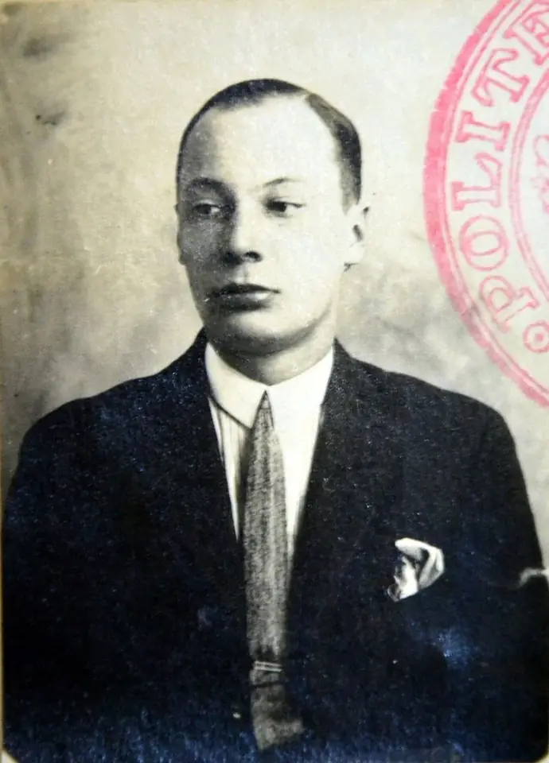

Churches, Cemeteries & John Paul II
Feriköy Latin Catholic Cemetery – memorial to Consul Wojciech Rychlewicz
In 2021 Turkey's Chief Rabbi prayed in this Catholic cemetery, at the memorial to a Polish consul whose story had come to light only a year before.


- District
- Şişli
- Period
- 1937–1941 / 2021
- Visiting
- Limited access
The story
In 1940 a Polish consul in Istanbul issued Jewish refugees from occupied Europe with papers declaring them Catholics – and so opened a way for them to escape.
Wojciech Rychlewicz (1903–1964) joined the Polish Consulate General in Istanbul in 1936 and headed it from 1937 to 1941. As Jewish refugees from Poland and Romania reached neutral Turkey, the consulate certified that they were Polish Catholics; with such papers it was easier to obtain visas for Palestine and the Americas. The memorial's inscription speaks of hundreds saved, some publications of thousands; the true number is not known. The story only came to light in 2020.
How to visit
The cemetery lies on Abide-i Hürriyet Caddesi, opposite the Feriköy Protestant Cemetery (do not confuse it with the large Muslim Feriköy Mezarlığı). It is a working cemetery: the gate may be closed, and you may need to ring or ask the caretaker. We do not mark the memorials' exact spot – ask on site or at the consulate. Opening times vary, so check before you go, and dress respectfully.
People
- Wojciech Rychlewicz
- Antoni Wojdas
- Zofia Ryży
- Andrzej Duda
- Lorenzo Piretto
- İsak Haleva
- Jakub Kumoch
Location
Şişli, Istanbul · Coordinates: 41.05315, 28.98534
Nearby
Sources
- hurriyetdailynews.com/polish-leader-visits-istanbul-monument-…
- haberturk.com/polonya-cumhurbaskani-duda-fener-rum-patrikhane…
- dzieje.pl/wiadomosci/ambasador-rp-w-turcji-zofia-ryzy-pielegn…
- timesofisrael.com/polish-diplomat-in-istanbul-rescued-hundred…
- notesfrompoland.com/2020/12/10/a-hidden-hero-documents-reveal…
- en.wikipedia.org/wiki/Wojciech_Rychlewicz
- en.wikipedia.org/wiki/Pangaltı_Catholic_Cemetery